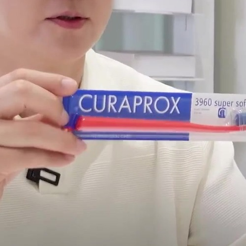

[광고] 쿠팡 파트너스 링크로 구매 시 채널이 수수료를 받을 수 있어요.

22번 · 스킨케어
큐라프록스 (CURAPROX) CS 5460 초극세모 칫솔
쿠팡에서 제품 상세 보기 →이 포스팅은 쿠팡 파트너스(또는 유튜브 쇼핑 제휴) 활동의 일환으로, 이에 따른 일정액의 수수료를 제공받습니다.

이 포스팅은 쿠팡 파트너스(또는 유튜브 쇼핑 제휴) 활동의 일환으로, 이에 따른 일정액의 수수료를 제공받습니다.